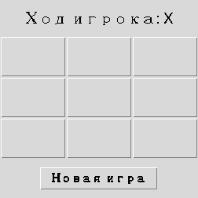

Глава 17 · Проект: «Крестики-нолики»
Новая игра — и первая полная версия
Финальный штрих первого прототипа — сброс игры без перезапуска программы. Но глава только начинается.
Кнопка новой игры
Чтобы не перезапускать программу заново после каждой партии, добавим кнопку сброса — она возвращает все переменные и все клетки в начальное состояние:
novaya_igra.py
def novaya_igra():
global tekuschij_igrok, igra_okonchena
tekuschij_igrok = "X"
igra_okonchena = False
for knopka in polya:
knopka.config(text="")
Полная программа
Соберём все части в одну программу — она уже полностью проверена и доступна отдельным файлом в этой книге:
projects/tkinter/tic-tac-toe/tic_tac_toe_basic.py
Запустите игру у себя
Скачайте файл и запустите его через
python tic_tac_toe_basic.py в терминале (глава 3) — либо кнопкой Run в VS Code или PyCharm.Это ПЕРВЫЙ рабочий прототип, не финал главы
Мы построили настоящую играющую программу — с ходами, победой, ничьей и сбросом. Это честная, полная маленькая игра. Но начиная со следующего раздела мы будем смотреть на неё внимательнее: откуда узнаёт callback, что его вообще кто-то вызвал; почему хранить состояние в тексте кнопки не лучшая идея надолго; как сделать интерфейс, который реагирует на мышь и клавиатуру одним и тем же кодом. К концу главы (раздел 17.31) та же самая игра станет
tic_tac_toe.py — с отдельной моделью состояния, подсветкой победной линии, счётом матчей и полными тестами.★★ Самостоятельная задача
Счёт побед
Добавьте метки счёта побед X и O, увеличивайте нужный счётчик при каждой победе — счётчик не должен обнуляться кнопкой «Новая игра».
★★★ Задача повышенной сложности
Подсветка выигрышной линии
Когда находится победитель, измените цвет фона трёх выигрышных кнопок — потребуется вернуть из proverit_pobedu() не только победителя, но и индексы линии.
Практика: новая игра и первая полная версия
Модуль tkinter открывает нативное окно Python — выполните локально в VS Code, PyCharm или Jupyter
Практика выполняется локально
Итоги раздела
Что мы узнали
.bind()реагирует на любые события — не только клик по кнопке.- Большие проекты строят по шагам: состояние → интерфейс → обработка событий → правила → сброс.
- Лямбда с параметром по умолчанию (
lambda i=indeks: ...) «замораживает» значение переменной цикла в момент создания. - Список кортежей — удобный способ описать несколько похожих проверок (восемь выигрышных линий) без повторения кода.
- У полноценной игры почти всегда есть способ начать заново, не перезапуская программу.
- Это только начало главы — дальше мы разберём систему событий Tkinter глубже и перестроим саму игру на более надёжной архитектуре.